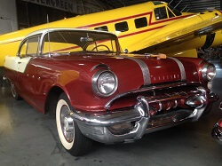

Pontiac Collection
Pontiac Automobile Collection
1955 Pontiac Catalina Star Chief
Year: 1955
Donor: William Leeper
Engine: V-8, 287 cubic in, approx 180 HP
Transmission: Automatic
Number of Doors: 2
Curb Weight in Lbs: 3797
This type of vehicle was the top-of-the-line for Pontiac at the time. The Star Chief series was extremely popular with audiences thanks to its improved handling capabilities and design flairs including the coordinated body coloring and interiors.
1955 Pontiac Chieftain
 Year: 1955
Year: 1955
Donor: Michael Sullivan
Engine: V-8
Transmission: Automatic
Number of Doors: 4
Curb Weight in Lbs: 3657
Mark and Dorothy Sullivan bought this car on March 26, 1955. The original sales slip for $3,040.96 was hand written on a grocery store stationary form from Arcade Pontiac in Washington, D.C. Soon after the car was purchased the family moved to McChord Air Force Base, Washington – they drove all the way there in the Pontiac. After three years at McChord, Mark was posted to Elmendorf Air Force Base, Alaska. The Pontiac was shipped by rail there and then shipped back after three years and driven to Luke Air Force Base, Arizona, where Mark retired.
Eventually Mark and Dorothy moved on to newer cars and the Pontiac was passed down to the kids. After changing hands from two of his siblings, ownership of the car fell to Mike. It was well worn out when he got it and he decided to fix it up during his spare time. Mike’s restoration emphasis was to return the car to its original showroom condition. Over the years he kept working at it until the vehicle was completely restored. All the mechanical devices were overhauled to the original specifications and the interior is as close to the original match as he could find. Its most recent paint job took 2 months to complete. To insure the colors were correct Mike contacted the original paint supplier of the vehicle. The whole process has been a lifelong endeavor but Mike is glad that it found a home at WAAAM.
1960 Pontiac Catalina Custom Coupe
 Year: 1960
Year: 1960
Donor: Kathy Spainhower
Engine: V-8
Transmission: Automatic
Number of Doors: 2
Curb Weight in Lbs: approx. 3850
Good Timin' embraces the spirit of the custom car world. The candy tangerine with purple scallops on a silver base took four years to complete. Technically, there were no major body changes done to the car but "minor" alterations include things like adjusting the body contouring to match the front fenders, double Oldsmobile replacement grills, Buick headlight bezels, Cadillac tail lights, dual exhaust, and many other fun goodies to give the car its own personal flair. It has won several awards in various car shows including one at Hot August Nights in Reno, Nevada.
1968 Pontiac GTO
Year: 1968
Donor: Phil & Judy Jensen
Engine: V-8
Transmission: Automatic
Number of Doors: 2
Curb Weight in Lbs: 3,500
THIS ISN"T DONE YET!!!! front end is actually a color matched dent resistant plastic. WAAAM's GTO does not come with the exceedingly popular hidden headlights.